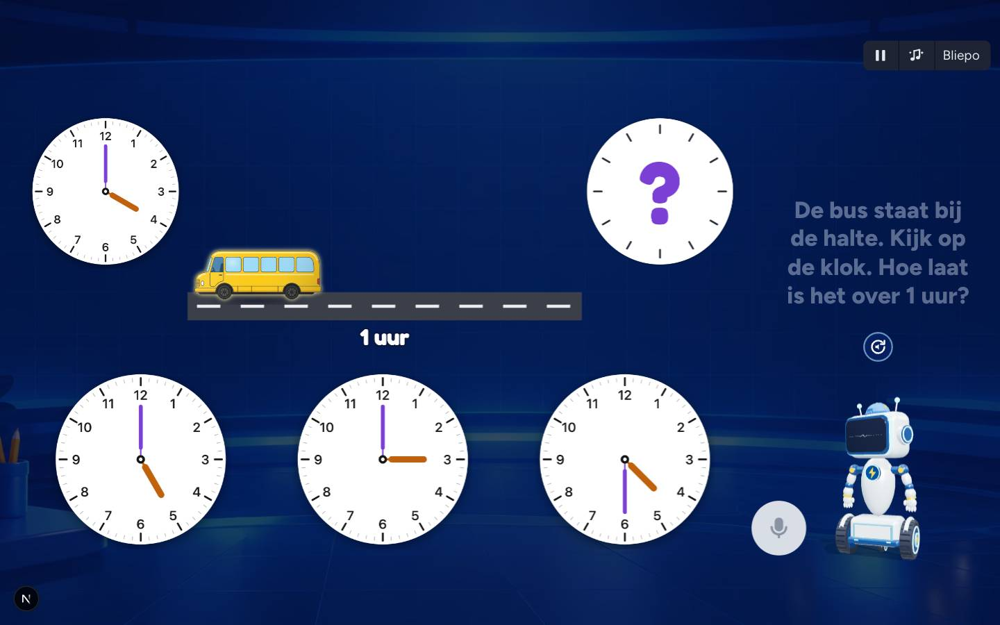
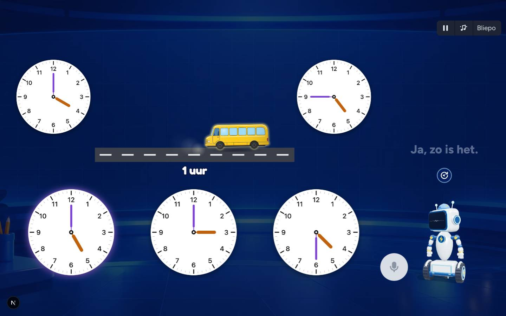
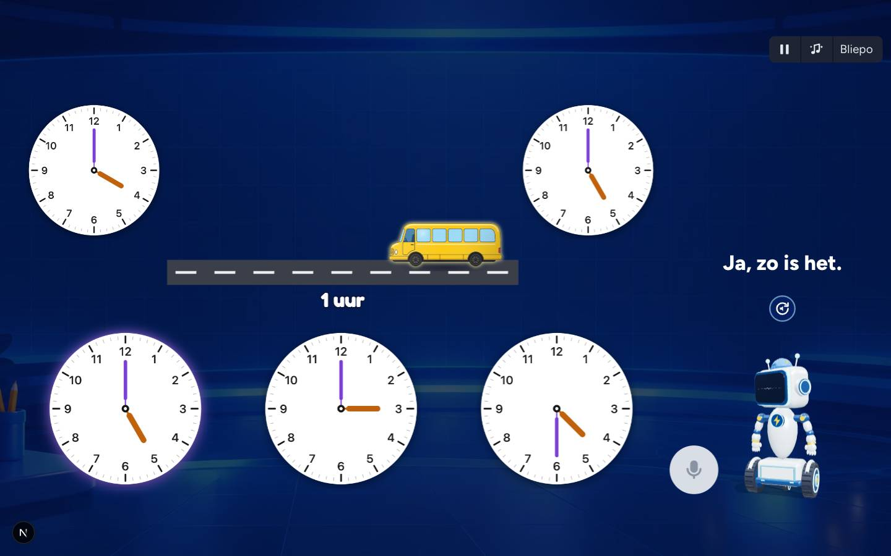

Een plaatje moet iets doen in de opdracht (BOUWREGELS 1.22). Hier zie je 3 voorbeelden: tijdens de vraag alleen het begin, na het antwoord speelt het verhaal zich af.
1. De bus bij Klokkijken (squla-klok-klokkijken3-4, vraag 4)

Tijdens de vraag: bus bij de halte, klok met vraagteken bij school.

Na het goede antwoord: de bus rijdt, de wijzers bij school draaien.

Het stofwolkje achter de bus; klok springt op 5:00.